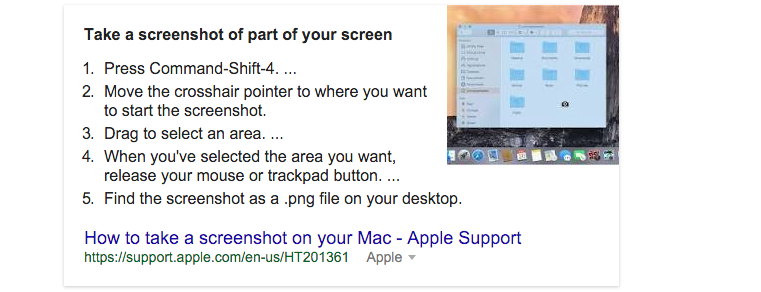
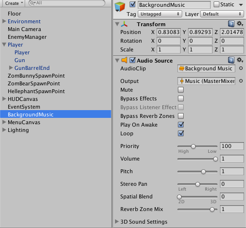
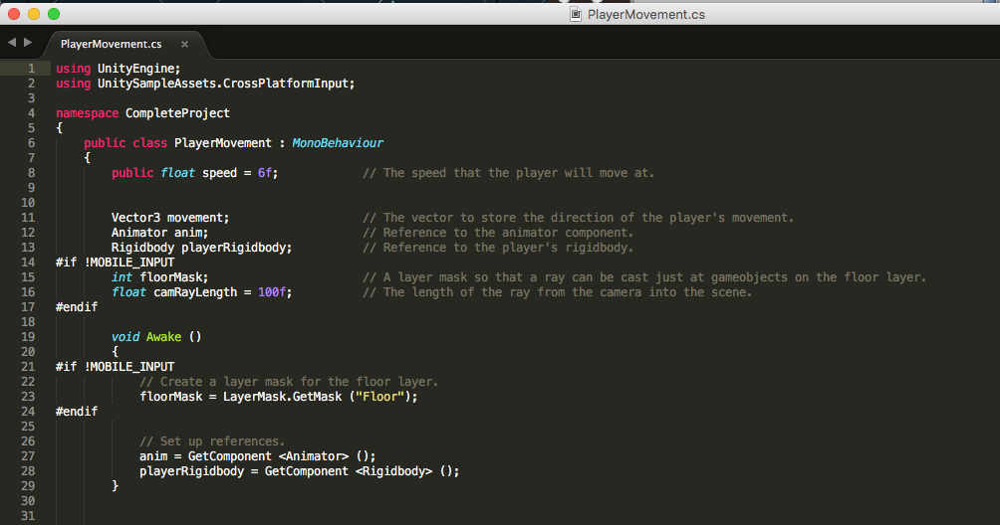
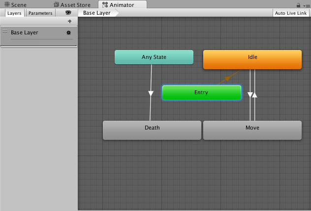

Digital Design 1/28/16
- Objective: Students will... create web pages that include a web journal
- Agenda: -finish web journal
- -History of JavaScript reading
- -Create QUIZ
- -SUMMARY
- Today I figured out that you could tag specific lines of text. I had also finished my Journal Page on the website. Coincidentally this helped me to understand how immensly easy it was to actually add another page to a website. Worki today ewas also annoying seeing as that the sun was in my eyes but that is unimportant and not the point, in circumstances relating to work today I had a minor error trying to make certain list items have a background on them and next class I will be looking into working on doing so correctly. Well I (at the end of class) figured it out, I do not know why at all but, I tried it after changing NOTHING and it worked
Digital Design 1/28/16
- Objective: Students will... become familiar with JavaScript through practicing alerts, prompts, variables and using the console.
- Agenda: -finish History Questions
- -Watch Intro JS Screen Cast
- -Explore Rainbow Challenge
- -SUMMARY
- Today I had figured out that I needed a margin for my navbar and I had fixed it by adding in the nesseccary code required to fix the problemo. I have...
Digital Design 2/1/16
- Objective: Students will...
- Agenda: -Variables Lecture
- -Array Screen Cast
- -Mini Array Challenge
- -SUMMARY
- Today I decided to quit.
Digital Design 2/1/16
- Objective: Students will...
- Agenda: -Variables Lecture
- -Cheat Sheet
- -Notes
- -SUMMARY
-
- Which ones properly defines an array?
- What are the values in the array?
- What are the types of values in an array?
- 1)
- var my_array = {"one",2,"three"};
- 2)
- var
Digital Design
- Objective: Students will... Create a costum design button which causes a JavaScript function to run.
- Agenda: -Set-up of code
- -Function lesson
- -Button lesson
- -Style lesson
- -SUMMARY
-
Digital Design 2/18/16
- Digital Design 2/18/16
- Objective: Students will... determine the true/false values of statements and use logic to write JavaScript code.
- Agenda: -Update Web Journals
- -Notes
- -Practise
- -SUMMARY
-
Digital Design 3/1/16
- Digital Design
- Objective: Students will...
- Agenda: -Start work on Game
- -Get the level mapped out
- -SUMMARY
- While I was loading up Unity and downloading some assets I had crashed Unity because iI had to many assets loaded to one project. I also got all of my Journal entries styled and set-up properly.
Digital Design
- Digital Design
- Objective: Students will... Finish up the Journal entries
- Agenda: -
- -
- -
- -SUMMARY
- Well, none of yesterdays progress was saved on my journals so i had just redone them without help but hey, they dont look all to bad so yea! still haven't figured out how to add add in screenshots but, I have figured out how to take a screenshot.

Digital Design 3/1/16
- Digital Design
- Objective: Students will...
- Agenda: -
- -
- -
- -SUMMARY
- I have made the game level design and found out that music can be assigned to anything, currently I have a floor set-up and a music track almost done I have my Scene saved and I FINALLY have my journals in order. I found out that you can actually assign any audio clip to anything and take out the Doppler Effect on the audio to make a theme song for the entirety of the game such as assigning the music to the floor so you could find it better since it's just the one child element(addition).

Digital Design 3/11/16
- Digital Design
- Objective: Students will... Continue work on the music for the game and beggin work on the player character.
- Agenda: -Finish music
- -Start making the Players Chacter
- -its my birthday whoo
- -SUMMARY
- Today I learned how a tag affects a game object, It can actually effect many things most notibly any time two game objects come into contact. I also learned how to use an Animation Controller(AC), also I am learning how to use CSharp (CS) to make the character move, die and eventually shoot.

Digital Design 3/22/2016
- Digital Design
- Objective: Students will...
- Agenda: -fix all coding errors
- -Get Animation transferring done
- -
- -SUMMARY
- So I found out that the majority of my errors are typos but, the script itself might have some bugs. If it does, I will have to find another tutorial to move the character and make the camera a child element of the character and see how the animator would take that. The Raycast method for the camera is a good concept but with Unity having released a new update since this tutorial i might have to spend some time with a tutor to help out with my coding problems. It also seems to turn out that Sublime Text isn't exactly a great code writer to use for C# (CSharp). Today I did however find out how to use a camera as a child element of something to use it to follow that thing you are moving.
Digital Design 3/24/2016
- Digital Design
- Objective: Students will... Finish work on the charactr animations and figure out how to put the camera in using raycasting.
- Agenda: -CAST THE RAYCAST
- -Move around and see how the game works
- -
- -SUMMARY
- Well the player moves, the camera follows, and the scene looks great. The animation is a little buggy when it comes to switching from idle to moving though. I think its because of the smoothness dynamic next class I am going to investigate further into the problem.
Digital Design 3/28/2016
- Digital Design
- Objective: Students will... Start the enemies and work out the kinks in the animating process
- Agenda: -Enemies
- -Finish the animating glitch
- -
- -SUMMARY
- I now have an enemey in the game, it was a difficult and annoying process most prodominately due to the animator making far less sense than it did before. I just figured it was because i was away from the system in a while so trying to ignore the frustration I powered through but the animating thing with the player just threw me a curveball so i was a little annoyed that I still couldn't work out the bug with the player moving from idle to moving script/animation. Even with the frustration I did finish the enemy Zombunny and it will follow the player and have the normal walking.
Digital Design 3/30/2016
- Digital Design
- Objective: Students will... MAKE THE ANIMATION SWITCH BETWEEN MOVING A TRIGGER AND IT MAY FIX THE WEIRD GLITCH WHER IT TAKES A WHILE TO GET INTO THE WALKING ANIMATION (took as a note from previous class now it is an objective.)
- Agenda: - Phaser Activity
- -fix animation.
- -
- -SUMMARY
- 1. There is no difference to me, working with nothing you have no clue what to do, working with code already in you are left wondering what they did. The help tab did absolutely nothing at all and the system just does not make any sense. After using Unity it just seems to be useless and far more difficult to use based off of just jumping in.
2. I changed the Physics with the jumping on the player sprite and I made the platforms moveable, other than that i was trying to figure out how to make the world bigger or change the look of anything but, I had no clue what code it was even running off of.
3. I tried playing iot but it was boring so instead I coded in it, unfortunately I did not like that either because it didn't make much sense. //ACTUALLY THE SUMMARY NOW\\ I finally found out how to get the animation to work!!! I had modified the animation so it will IMMEDIATLY stop when I stop moving or start moving and switch into the correct animation so I stop without doing the weird moving while not moving. Best part, I figured it out on my own.

Digital Design 4/1/2016
- Digital Design
- Objective: Students will... Make the enemies attack and the player take damage..
- Agenda: -Make Player life HUD
- -Make enemy attack
- -Make player take damage
- -SUMMARY
- I learned how to add UI to make a non-interactive game HUD. I also learned how to make the enemey attack work and have the player damage be shown and have a flash when the player takes damage. on top of this I also had done the whole contract negotiation.

Digital Design 4/5/2016
- Digital Design
- Objective: Students will... Make the gun actually shoot
- Agenda: -
- -
- -
- -SUMMARY
-
Digital Design 4/7/16
- Digital Design
- Objective: Students will... WATCH THE END OF THE TUTORIAL 7
- Agenda: -
- -
- -
- -SUMMARY
- So I watched the tutorial and now the gun will shoot and is fully operational but, i only have the one enemy so i dont exactly have much of a game as much as I have a stupid loading screen for a game maybe. I'm going to try anf make some enemies for the game and some spawners next by continuing with the tutorials. however at least the gun can hit an enemy and make the little puff when it hits an enemy. (Photo taken later in game after making spawners and other enemies.)

Digital Design 4/18/16
- Digital Design
- Objective: Students will... work on oraganizing their projects and completing their projects.
- Agenda: -web journal
- -projects
- -SUMMARY
- I helped Seth out with getting some bugs out of his game, I actually helped him make a spike trap, i helped him with a bug he had with his games borders breaking as well.
Digital Design 4/20/16
- Digital Design
- Objective: Students will... Continue working on the project
- Agenda: -Work on an enemy spawner
- -maybe get into making a second type of enemy
- -SUMMARY
-
Digital Design 4/26/16
- Digital Design
- Objective: Students will... continue completing projects and attempt this Folder Project.
- Agenda: -
- -
- -
- -SUMMARY
-